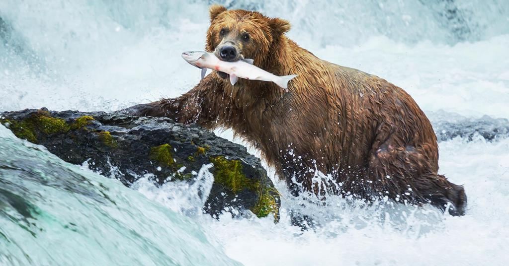
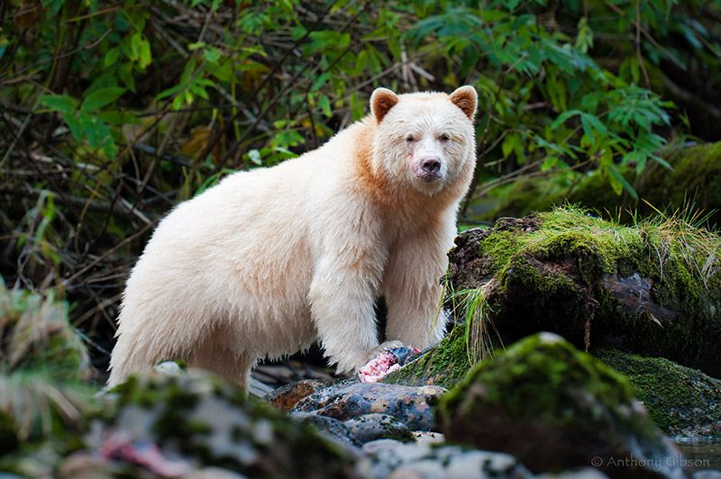

Životinja: Mrki medved
Naučno ime: Ursus arctos
Životni vek: 28 - 30 godina
Visina: 150 cm
Porodica: Medvedi - Ursus
Masa: 300 kg
Mrki medved vrsta je zveri iz porodice medveda,
široko rasprostranjena u severnoj Evroaziji i Severnoj Americi. U
Severnoj Americi populacije smeđih medveda često se nazivaju grizli.
Jedan je od najvećih živih zemaljskih pripadnika reda Carnivora, čiji
je rival po veličini samo njegov najbliži srodnik, polarni medved
(Ursus maritimus), koji je mnogo manje varijabilan po veličini i nešto
veći u proseku. Medved je najnezgrapnija i najteža zver
Evrope. Pokreti mu deluju nespretnije nego što stvarno jesu. Njegova
silna snaga i jake kandže olakšavaju mu pešačenje. Penje se po stenama
a može da se popne i na drvo. Ne plaši se vode i često ulazi u nju da
se rashladi. Više je upućen na biljnu nego na životinjsku hranu mada
jednostavno jede sve što je jestivo. Obožava med, a sa vremena
na vreme uhvati i neku ribu. Ako je navikao na životinjsku hranu
postaje grabljivac u pravom smislu te reči. Tada progoni sve veće
životinje (ovce, konje i različitu divljač). Zimu provodi u snu u svom
brižljivo spremljenom brlogu, gde ženka tokom zime donosi na svet 1-3
mečeta.

Medvedi

Životinja: Beli medved
Naučno ime: Ursus maritimus
Životni vek: 25 - 30 godina
Visina: 2.5 - 3.3 m
Porodica: Medvedi - Ursidae
Masa: 450 – 1000 kg
Beli ili polarni medved je vrsta medveda koji naseljava Arktik. Najveći je kopneni mesojed na svetu - većina odraslih mužjaka teži od 450 do 1.000 kilograma, dok su ženke skoro duplo manje. Krzno je gusto i providno, i često je krem belo obojeno. Stoga obezbeđuje životinji efikasnu kamuflažu prilikom lova, međutim, koža je zapravo crne boje. Beli medvedi imaju kratak rep i malene uši kako ne bi izgubili višak toplote, kao i relativno malu glavu i izduženo zaoštreno telo pogodno za plivanje. Kao morski sisar, beli medved se adaptirao životu na zemlji, ledu i u vodi. U svom okruženju je vrhunski predator - uglavnom se hrani fokama, mladim morževima i kitovima, iako je spreman da pojede sve što može da ubije. Beli medvedi su ranjiva vrsta. Neki naučnici i klimatolozi veruju da će opadanje polarnog leda i porast nivoa mora usled globalnog zagrevanja imati presudnu negativnu ulogu u sudbini ove vrste tokom ovog veka.
Naučno ime: Ursus maritimus
Životni vek: 25 - 30 godina
Visina: 2.5 - 3.3 m
Porodica: Medvedi - Ursidae
Masa: 450 – 1000 kg
Beli ili polarni medved je vrsta medveda koji naseljava Arktik. Najveći je kopneni mesojed na svetu - većina odraslih mužjaka teži od 450 do 1.000 kilograma, dok su ženke skoro duplo manje. Krzno je gusto i providno, i često je krem belo obojeno. Stoga obezbeđuje životinji efikasnu kamuflažu prilikom lova, međutim, koža je zapravo crne boje. Beli medvedi imaju kratak rep i malene uši kako ne bi izgubili višak toplote, kao i relativno malu glavu i izduženo zaoštreno telo pogodno za plivanje. Kao morski sisar, beli medved se adaptirao životu na zemlji, ledu i u vodi. U svom okruženju je vrhunski predator - uglavnom se hrani fokama, mladim morževima i kitovima, iako je spreman da pojede sve što može da ubije. Beli medvedi su ranjiva vrsta. Neki naučnici i klimatolozi veruju da će opadanje polarnog leda i porast nivoa mora usled globalnog zagrevanja imati presudnu negativnu ulogu u sudbini ove vrste tokom ovog veka.
